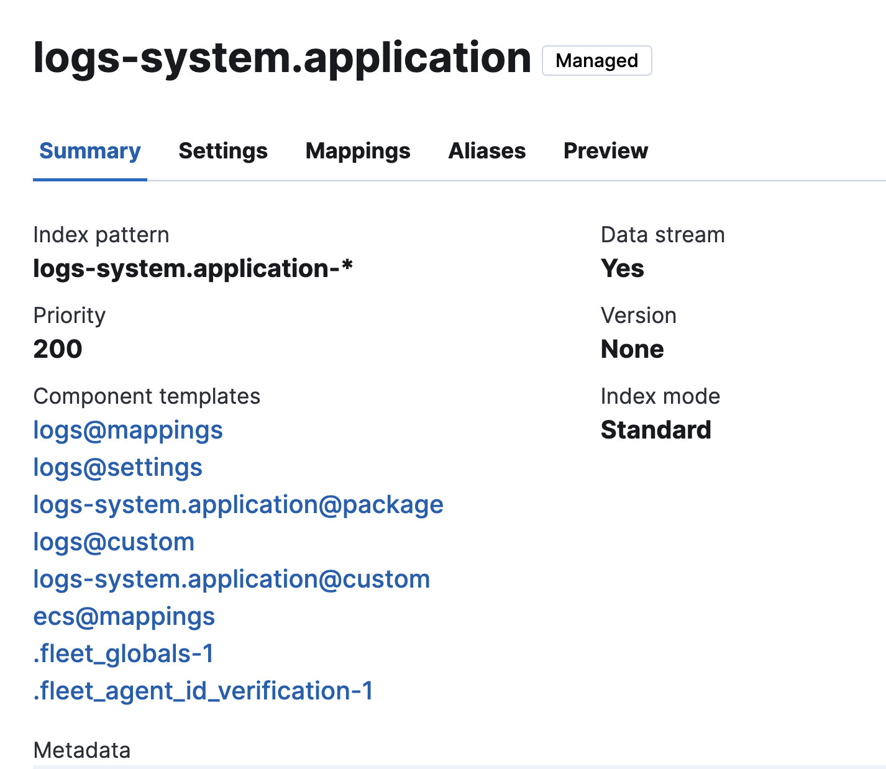
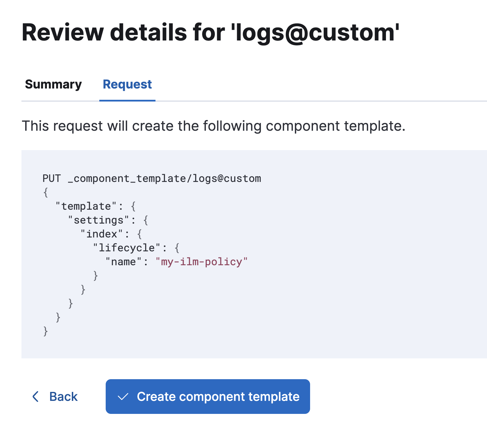

Scenario 1: Apply an ILM policy to all data streams generated from Fleet integrations across all namespaces
editScenario 1: Apply an ILM policy to all data streams generated from Fleet integrations across all namespaces
editThis tutorial uses a logs@custom and a metrics@custom component template which are available in versions 8.13 and later.
For versions later than 8.4 and earlier than 8.13, you instead need to use the <integration prefix>@custom component template and add the ILM policy to that template.
This needs to be done for every newly added integration.
Mappings and settings for data streams can be customized through the creation of *@custom component templates, which are referenced by the index templates created by each integration.
The easiest way to configure a custom index lifecycle policy per data stream is to edit this template.
This tutorial explains how to apply a custom index lifecycle policy to all of the data streams associated with the System integration, as an example.
Similar steps can be used for any other integration.
Setting a custom index lifecycle policy must be done separately for all logs and for all metrics, as described in the following steps.
Step 1: Create an index lifecycle policy
edit- To open Lifecycle Policies, find Stack Management in the main menu or use the global search field.
- Click Create policy.
Name your new policy.
For this tutorial, you can use my-ilm-policy.
Customize the policy to your liking, and when you’re done, click Save policy.
Step 2: Create a component template for the logs index templates
editThe Index Templates view in Kibana shows you all of the index templates available to automatically apply settings, mappings, and aliases to indices:
- To open Index Management, find Stack Management in the main menu or use the global search field.
- Select Index Templates.
-
Search for
systemto see all index templates associated with the System integration. -
Select any
logs-*index template to view the associated component templates. For example, you can select thelogs-system.applicationindex template. -
Select
logs@customin the list to view the component template properties. - For a newly added integration, the component template won’t exist yet. Select Create component template to create it. If the component template already exists, click Manage to update it.
- On the Logistics page, keep all defaults and click Next.
-
On the Index settings page, in the Index settings field, specify the ILM policy that you created. For example:
{ "index": { "lifecycle": { "name": "my-ilm-policy" } } } - Click Next.
- For both the Mappings and Aliases pages, keep all defaults and click Next.
-
Finally, on the Review page, review the summary and request. If everything looks good, select Create component template.

Step 3: Roll over the data streams (optional)
editTo confirm that the index template is using the logs@custom component template with your custom ILM policy:
- Reopen the Index Management page and open the Component Templates tab.
-
Search for
logs@and select thelogs@customcomponent template. - The Summary shows the list of all data streams that use the component template, and the Settings view shows your newly configured ILM policy.
New ILM policies only take effect when new indices are created, so you either must wait for a rollover to occur (usually after 30 days or when the index size reaches 50 GB), or force a rollover of each data stream using the https://www.elastic.co/guide/en/elasticsearch/reference/8.18/indices-rollover-index.html[Elasticsearch rollover API.
For example:
POST /logs-system.auth/_rollover/
Step 4: Repeat these steps for the metrics data streams
editYou’ve now applied a custom index lifecycle policy to all of the logs-* data streams in the System integration.
For the metrics data streams, you can repeat steps 2 and 3, using a metrics-* index template and the metrics@custom component template.